Photo credits
The sample websites use photos published on Unsplash under the Unsplash License, which allows free commercial use. Credit isn't required, but we give it anyway. We chose photos without recognizable faces or readable brand names. The businesses, people's names and reviews on the samples are fictional.
Real client websites use the client's own photos, or stock photos licensed the same way and recorded here or in the client's project file.
Café sample (Copperleaf Café)
| Photo | Shows | Photographer | Source |
|---|---|---|---|
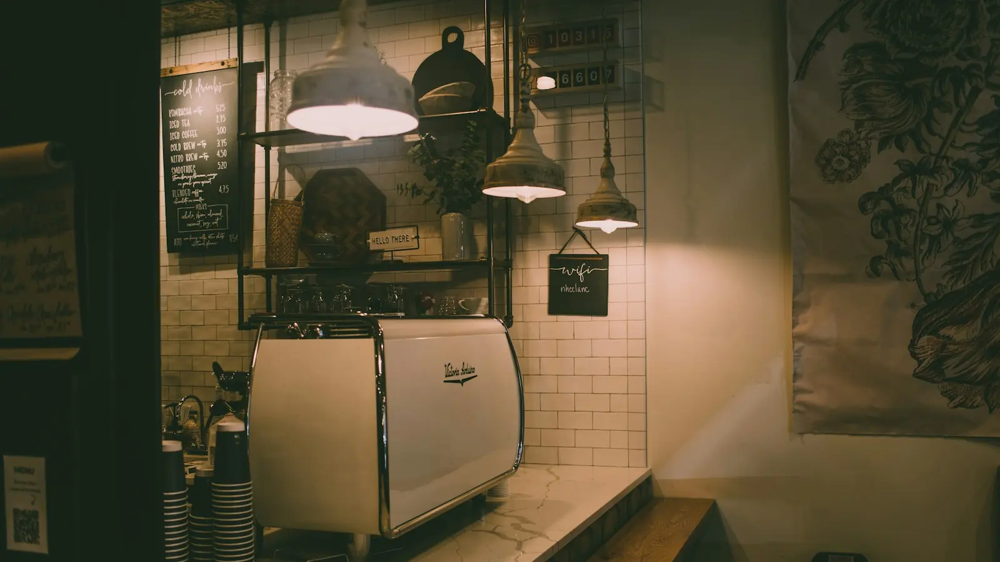 | Café counter with espresso machine | Roman Denisenko | unsplash.com/photos/UPTYzwX3QME |
| Heart latte on coffee beans | Nathan Dumlao | unsplash.com/photos/XOhI_kW_TaM | |
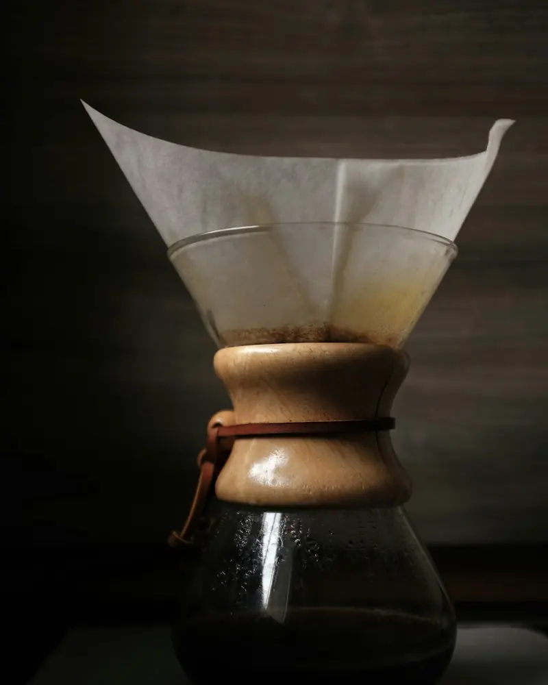 | Pour-over brewer | Peter Oslanec | unsplash.com/photos/E6f3_ipCdfc |
| Avocado toast with poached egg | Salman Sidheek | unsplash.com/photos/ui-pynyV3Nc | |
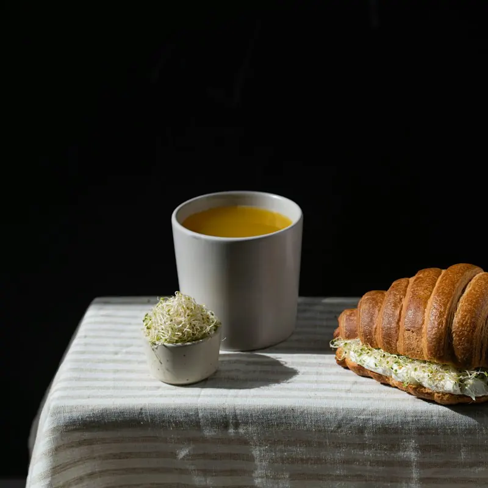 | Croissant sandwich and soup | nilufar nattaq | unsplash.com/photos/LMiHG35Nqk8 |
| Tray of croissants | Conor Brown | unsplash.com/photos/sqkXyyj4WdE | |
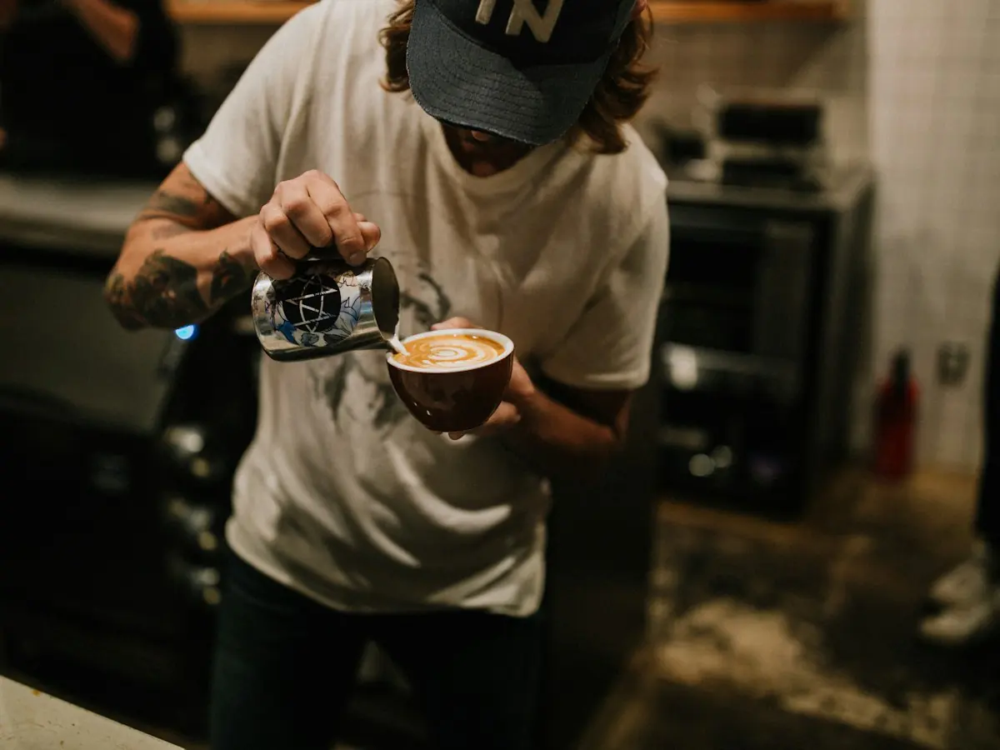 | Barista pouring latte art | Benjaminrobyn Jespersen | unsplash.com/photos/gGsarGszQHo |
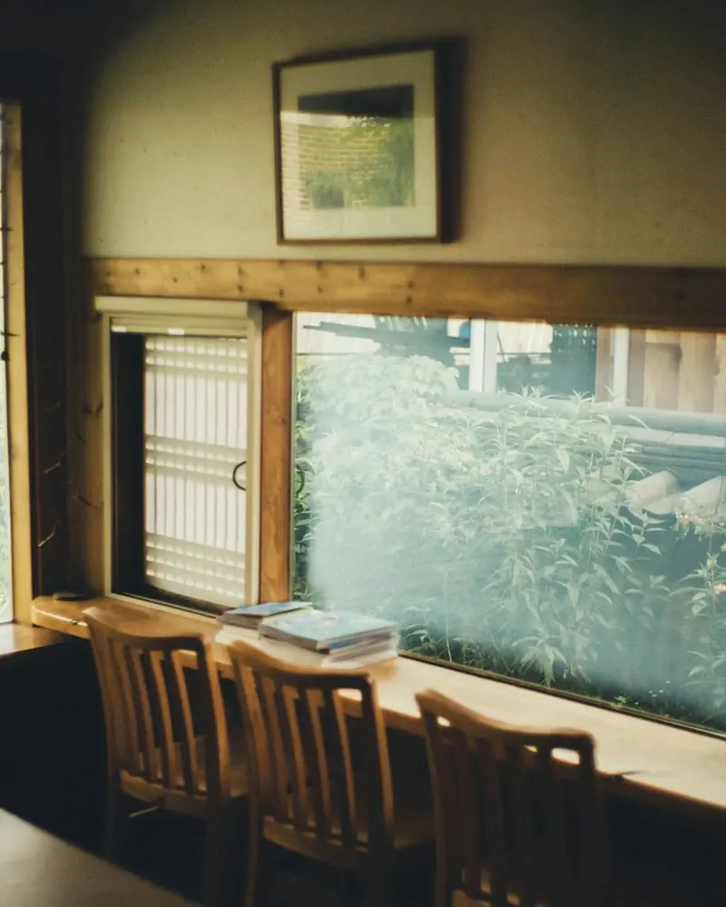 | Café seating by a window | Bundo Kim | unsplash.com/photos/l_IOE622LQ4 |
Barber sample (Fade Theory Barbers)
| Photo | Shows | Photographer | Source |
|---|---|---|---|
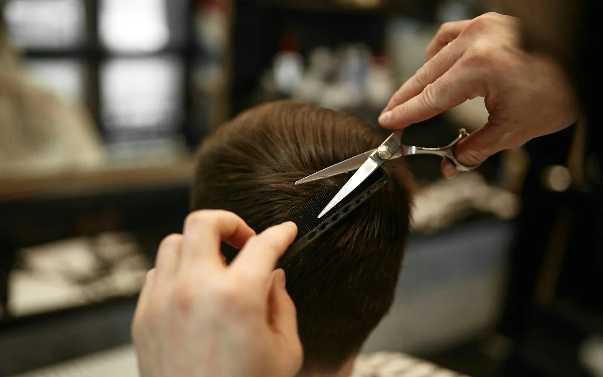 | Scissor cut in a barbershop | Hair Spies | unsplash.com/photos/LU2XkVyhf_c |
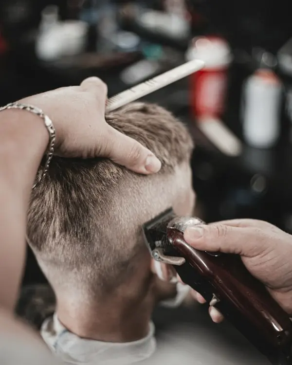 | Clipper fade, client seen from behind | Tá Focando | unsplash.com/photos/YDOc9F6HUFA |
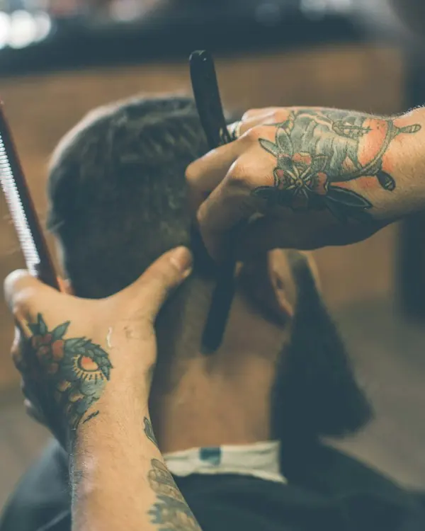 | Straight-razor line-up | Fábio Alves | unsplash.com/photos/DYetcnz0jRY |
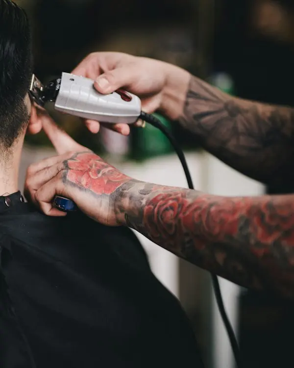 | Neckline trim with clippers | Hai Phung | unsplash.com/photos/m4Pd_e-4zKs |
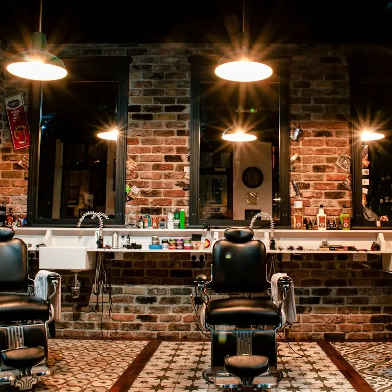 | Barbershop chairs and brick wall | Nathon Oski | unsplash.com/photos/EW_rqoSdDes |
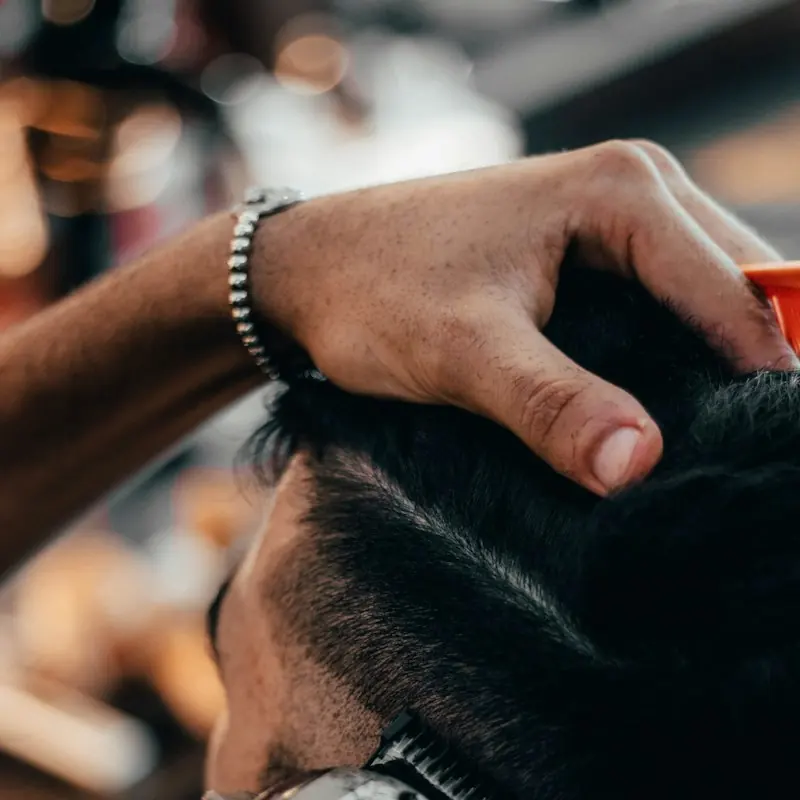 | Blending a fade | Salah Regouane | unsplash.com/photos/MRCdF3qUbp0 |
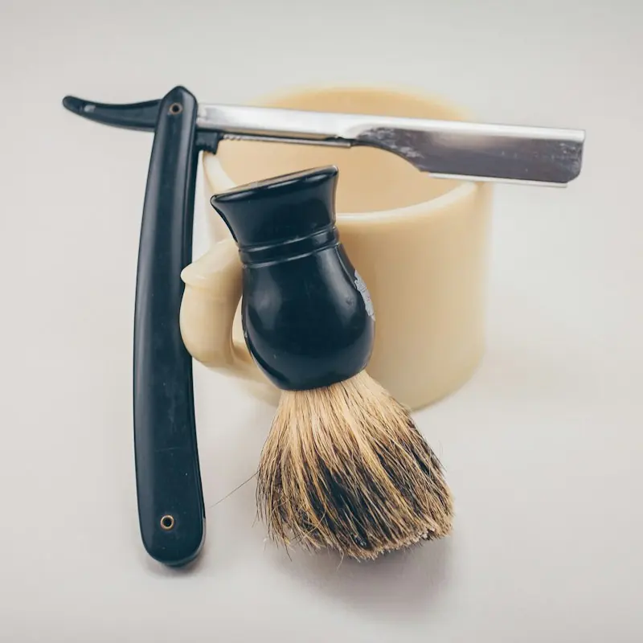 | Straight razor and shaving brush | Josh Sorenson | unsplash.com/photos/FvKpUZCbZ-s |
Plumbing sample (Basalt Plumbing & Heating)
| Photo | Shows | Photographer | Source |
|---|---|---|---|
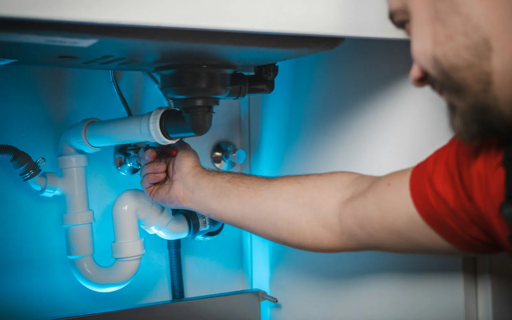 | Plumber working on bathroom pipes | bhagya laxmi | unsplash.com/photos/jaP5ClBdIyU |
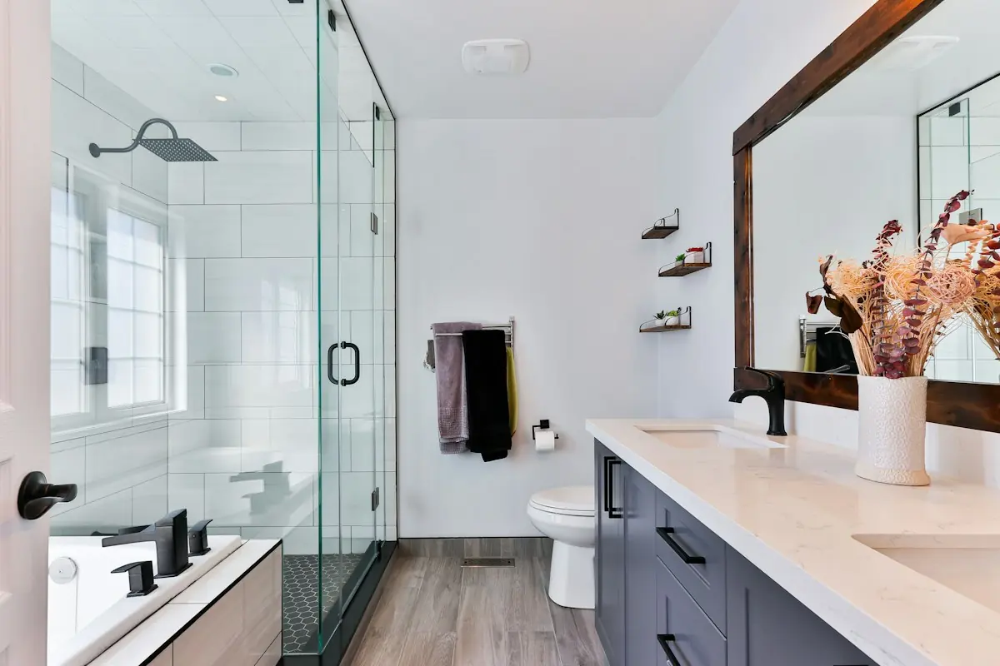 | Modern bathroom | Lotus Design N Print | unsplash.com/photos/g51F6-WYzyU |
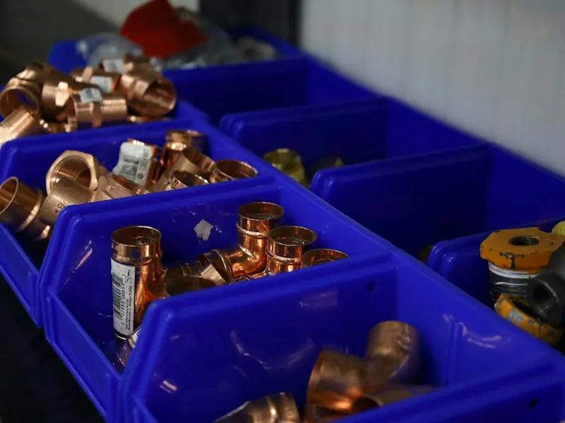 | Copper pipe fittings | Guille B | unsplash.com/photos/ONZIRho_-TM |
| Kitchen faucet running | Imani | unsplash.com/photos/vDQ-e3RtaoE | |
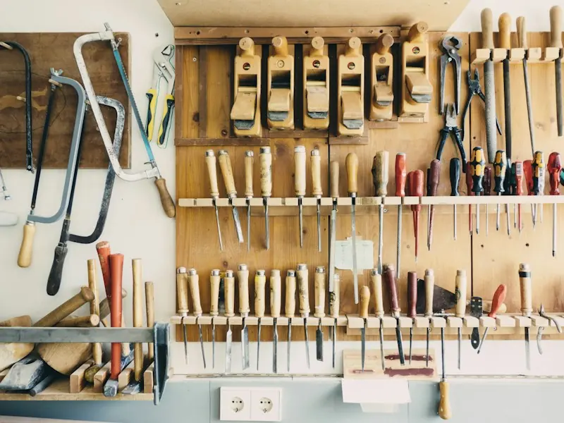 | Hand tools on a workshop wall | Barn Images | unsplash.com/photos/t5YUoHW6zRo |
| Leather tool belt with hammer | jesse orrico | unsplash.com/photos/L94dWXNKwrY |
Questions about an image? Email johnsonxcorp@outlook.com. Last checked 24 September 2026.